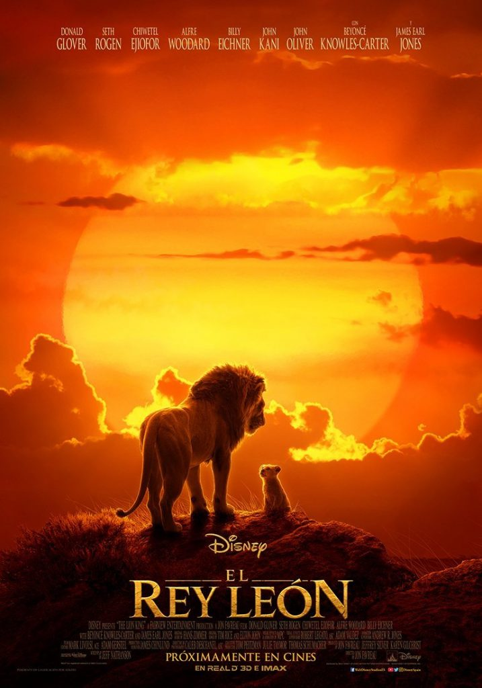

HISTORIA DE LA CARTOGRAFÍA
La Oikumene
La Cartografía en la Edad Media
EDADMEDIA-CLASE - 30 de septiembre de 2019
Templating -> https://www.chenhuijing.com/slides/56-imagecon-2019/#/13
https://www.chenhuijing.com/about/
Alineación de tres imágenes
Alineación de tres imágenes. destacando el centro
Comparación imágenes

Reference: Finally understanding JPG
Comparación imágenes matriz 4x4
Reference: Finally understanding JPG
Comparación imágenes matriz 3x2
Reference: Finally understanding JPG
Secuencia de 5 imágenes con doble caption

(2 colours)
(4 colours)
(16 colours)
(256 colours)
(16,777,216 colours)
Source: Wikipedia, Color depth
Mapas isidorianos
Mapas isidorianos - Mapas de V-
BnF, MS lat. 4915, fol. 26v, 1447–1455
Mapas isidorianos - Mapas de Y-O
Macon, Bibliotheque Municipale, MS 2, fol. 19r
Alineación de imágenes


Reference: Reducing PNG file Size
Título Orden 2 🙏
Lista de características
- Davis, W. (1986). The Origins of Image Making. Current Anthropology, 27(3), 193-215. doi:10.1086/203422
- The GIF Is Dead. Long Live the GIF.
- Types of Bitmaps
- Why do we need JPG compression and how it's technically working? by Steven Hansen
- Progressive JPEGs and green Martians by Jon Sneyers
- Finally understanding JPG by Christoph Erdmann
- How JPG Works, How PNG Works, Reducing PNG file Size by Colt McAnlis
- Thoughts on a GIF-replacement file format
- Quantum Up Close: What is a browser engine? by Matt "Potch" Claypotch
- Let's build a browser engine! by Matt Brubeck
- On rendering engines and graphic libraries by Kilian Valkhof
- Following up on the 2d graphics in Rust discussion by Nicolas Silva
- Introduction to WebRender – Part 1 – Browsers today by Nicolas Silva
- The whole web at maximum FPS: How WebRender gets rid of jank by Lin Clark
- Software vs. GPU rasterization in Chromium* by Martina Kollarova
- GPU Accelerated Compositing in Chrome by Tom Wiltzius, Vangelis Kokkevis & the Chrome Graphics team
Inserción videos
Características del Islam
One
Two
Three
Four
Gracias por su atención
Turno de preguntas